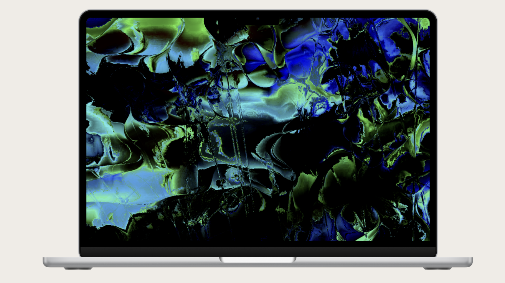
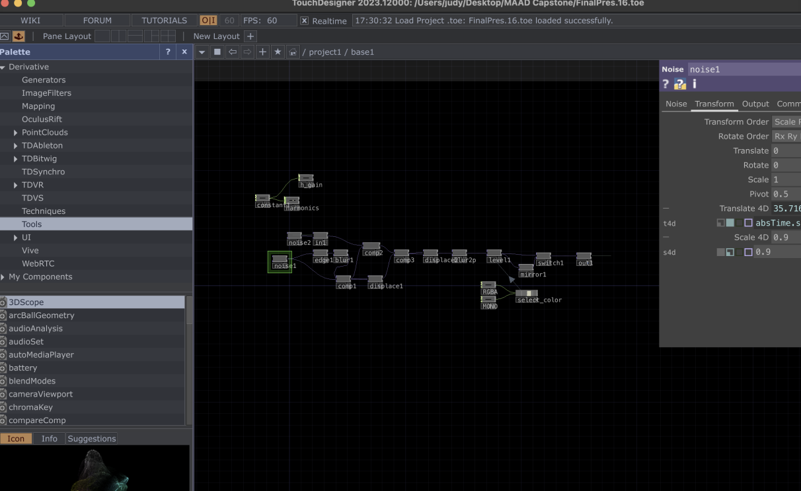
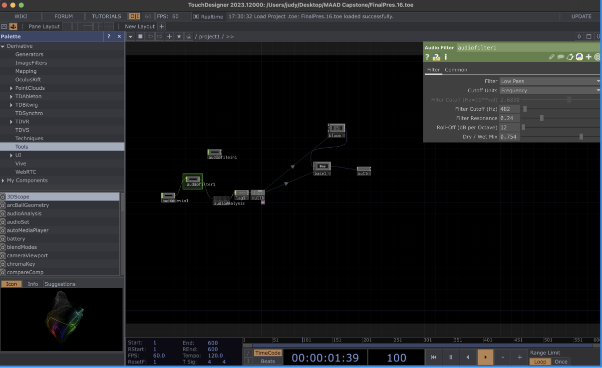
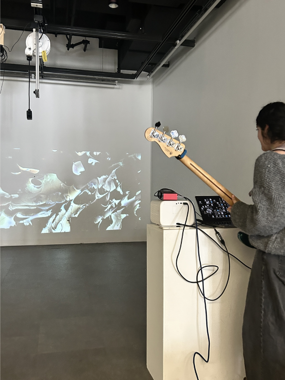

BA Capstone Project
A real-time visual system built in TouchDesigner to generate live, responsive visuals for performing musicians.


Laptop screen and full-frame output from the TouchDesigner visual system built for the BA Capstone performance. These images are screenshots of the moving visuals.
Overview
Bloom is a project I developed for my senior capstone project, using the programming software TouchDesigner. Inspired by my experiences as a touring/gigging bassist, I wanted to design an interactive experience that allows musicians to engage with real-time, audio-reactive visuals. This project merges the dynamic energy of live performance with innovative digital experiences, creating a seamless connection between sound and visual art.
Technical approach
The visuals were developed by experimenting with Noise operators in TouchDesigner. I created a network of operators that would generate visuals based on the audio input, whether from an audio file, MIDI, or from a microphone. Based on the intricacies of the audio, such as the volume, pitch, etc., the operators would generate different visuals.
Outcomes
A live experience for any type of musician.


